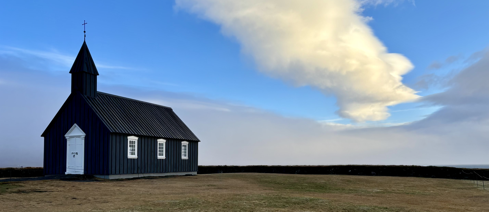
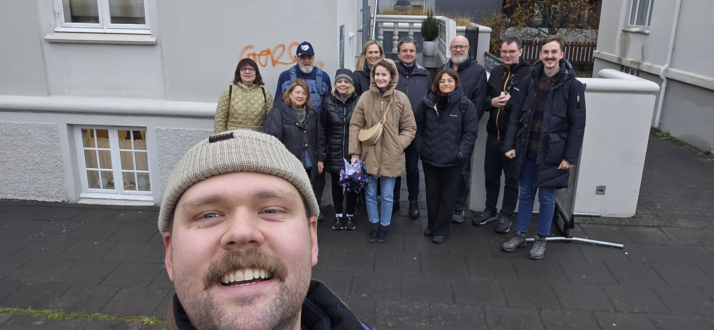
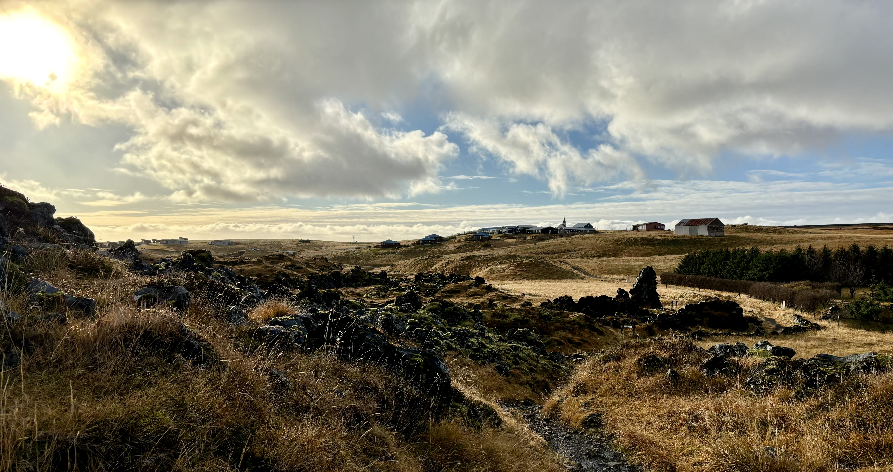
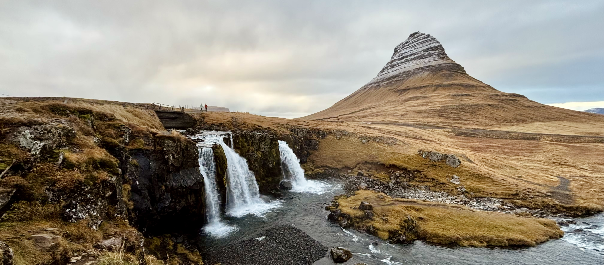
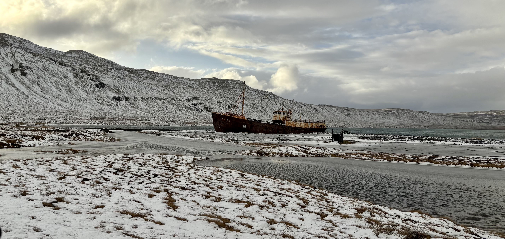
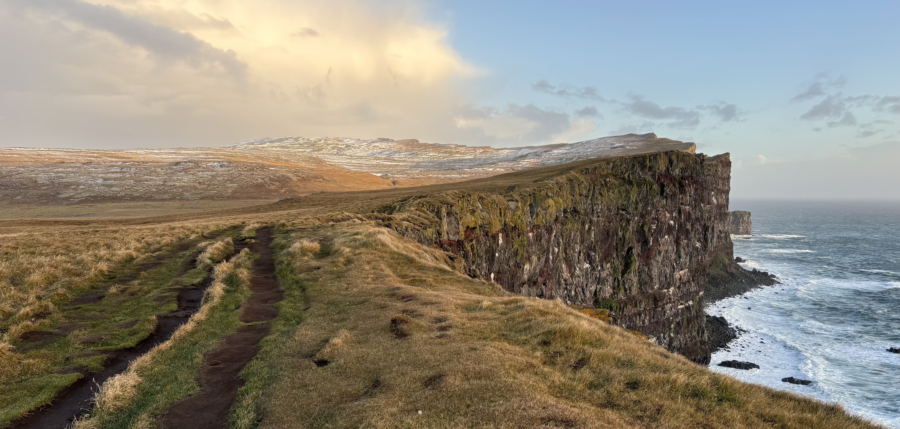
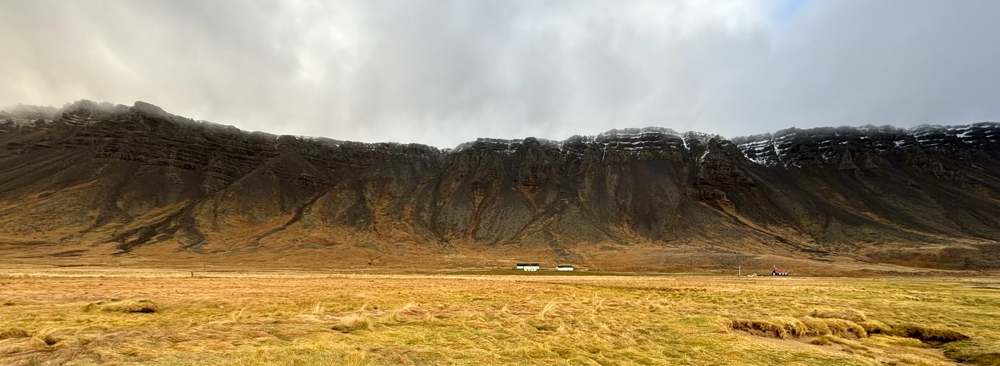
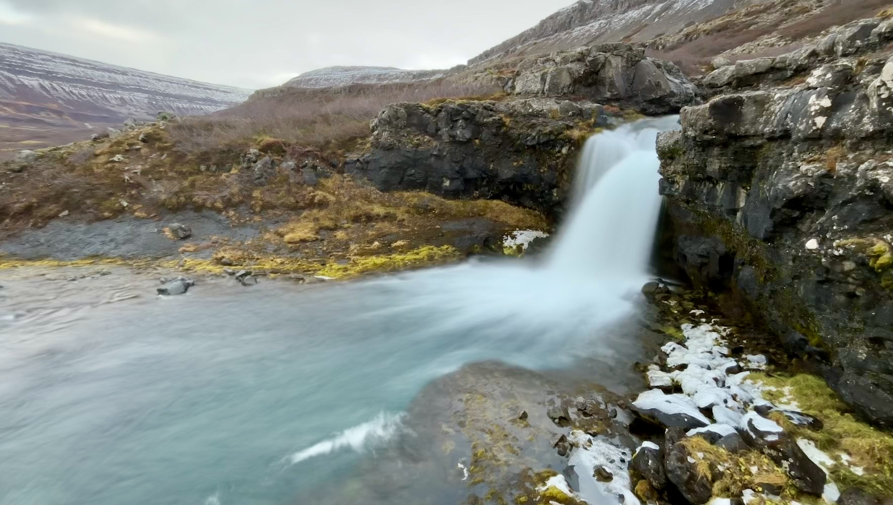
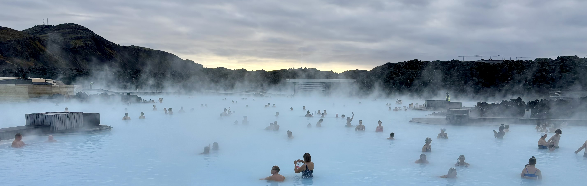

Island říjen 2024

Myslím si, že jsem ten typ cestovatele, kterému se líbí skoro všude. Před každou cestou si zjišťuju, co by se dalo v dané destinaci vidět, na místě mě dokáže nadchnout každá blbost a když nepočítám pár výjimek, po skončení cesty si vždy říkám, že by mi vůbec nevadilo se do dané země přestěhovat, nebo ji minimálně navštívit znovu. Nicméně tyto krásné představy vždy skončí jen u planých slov a nikdy nejsou přetaveny v činy. Když totiž přijde na lámání chleba, přepadne mě pocit, že je na světě ještě tolik krásných míst, kde jsem doposud nebyl, že je ztráta času jezdit někam dvakrát. A tak to je. Nutno ale dodat, že dnes už s výjimkou Islandu!
Ten měl po našem prvním návratu domů kolem sebe takovou zvláštní auru. Nebo mám raději říct “auroru”? Ne, teď vážně. Polární záře “svítí” na našem bucket listu už hodně dlouho a Island je podle mnoha zdrojů jedním z ideálních míst na světě, kde lze tento přírodní úkaz pozorovat. Když se tím pádem objevila akce od Wizz Air na levné letenky na konec října, kdy je zároveň ideální čas na pozorování polární záře, nebylo moc co řešit.
DEN 0
Protože naše letadlo odlétalo z Vídně až v 10 hodin večer, měli jsme celý den to se na cestu připravit. Dost mě proto naštvalo, když jsem si v autě uvědomil, že jsem doma zapomněl zbytek chleba, který si tím pádem v době naší nepřítomnosti nabarví vlasy na zeleno.
Na letišti už jsem na chleba nemyslel. Relativně rychle jsme prošli bezpečnostní kontrolou, dali si naprosto příšernou pizzu v jedné z letištních restaurací a krátce před 10. hodinou už jsme seděli v letadle.
Cca 4,5 hodiny dlouhý let jsem prospal. A byl jsem za to opravdu rád!
Po příletu jsme si chtěli vyzvednout objednané auto z autopůjčovny Wheego! Přestože její název mi nejdříve připadal jako dobrý vtip, smát jsem se přestal, když jsme prošli celé letiště, ale žádnou autopůjčovnu Wheego jsme nenašli. Bylo krátce po půlnoci a na druhé kolo po letišti jsem neměl náladu. Zašel jsem proto do Avizu, abych se paní u přepážky zeptal, zda by nám pomohla. Ta nám řekla, že pokud pobočku nemůžeme najít, potom na letišti není. Hm, rada za všechny prachy! V takových případech prý zaměstnanci autopůjčoven čekají na klienty v odletové hale a potom je shuttle busem zavezou na pobočku. A měla pravdu! V příletové hale na nás už čekal pán, který vypadal dost jako seveřan a taky moc nemluvil. A když už něco řekl, tak jsem mu vůbec nerozumněl, protože hrozně šeptal. Nějak mi ale sdělil, že ještě musíme počkat na další cestující a za 10 minut vyjedeme směr autopůjčovna. Volnou chvíli jsme proto využili tím, že jsme si zašli na záchod. Když jsme se vrátili a pán nás viděl, řekl ostatním 4 cestujícím, že můžeme vyrazit. V tom jeden ze skupinky zařval na celou odletovou halu: “Už jsou tady!” Super, typičtí Češi, kteří se v zahraničí chovají jako naprostí dementi, pomyslel jsem si. A bylo to přesně tak. Do minibusu s námi nastoupili dva muži a dvě ženy ve středních letech. Jedna z nich za celou dobu nezavřela hubu. Nakonec to byla ale docela čurina, protože mluvila trošku jako ožralá. Zakoktávala se, házela hodně špatný vtípky a svého muže oslovovala “táto”. Táta jen seděl a mlčel. Po chvilce jsem paní přestal poslouchat, a tak mi uniklo, že se na Island přestěhovala Markéta Irglová. To jste věděli? Myslím, že Alice by to věděla určitě!
V autopůjčovně nám pán předal auto a poté nám ještě vysvětlil, kde je sever, jih, východ a západ. Ptal jsem se ho totiž na to, zda si máme cestou na sever dávat na něco pozor. Když se mě zeptal, kam přesně na sever jedeme a já mu odpověděl, že míříme na západní fjordy, ukázal mi mapu a řekl, že západní fjordy jsou na západu, potom ukázal na opačnou stranu ostrova a řekl, že tam je východ. A když už do té mrtvoly kopnul jednou, rozhodl se kopnout i podruhé a potřetí a ukázal mi i to, kde je sever a jih. Potom se konečně dostal k odpovědi na moji otázku. Na tu mi řekl, že cesty na západních fjordech patří k těm nejhorším na ostrově. Máme si tedy dávat velký pozor. Když viděl naše vyděšené výrazy, snažil se nás uklidnit tím, že pokud nebudeme dělat hlouposti a budeme dodržovat rychlostní limity, myslí si, že budeme OK. To “hodně” pomohlo!
Z autopůjčovny jsme jeli rovnou na hotel, ubytovali se a kolem 2. hodiny ranní se konečně dostali do postele.
DEN 1
Po hotelové snídani jsme sedli do auta a vyrazili směr Reykjavík, kde nás čekaly dvě věci: nákupy a food walk.
Cesta z Keflavíku zabrala necelou hodinu. Auto jsme zaparkovali v podzemních garážích koncertní síně Harpa a chystali se vyrazit na nákupy oblečení z ovčí vlny. Nakonec se ale žádné nákupy nekonaly. K našemu překvapení jsme totiž zjistili, že naší Dacii Duster, pro kterou by bylo vhodnější spíše přízvisko “Ruster”, nejdou zamykat zadní dveře. Chvíli jsme se pokoušeli vyřešit problém sami, ale když se nám nepodařilo dveře uzamknout pomocí dálkového ovládání, starým dobrým otočením klíčku ve dveřích, ani zamčením auta zevnitř, zvedl jsem telefon a rozhodl se poprosit o pomoc autopůjčovnu. Telefon mi zvedl pán, který jako přítel na telefonu naprosto selhal. Nejdřív se mi snažil pomoct, ale žádná z jeho rad dveře nezamčela. Následně mi řekl, že on by byl v klidu. Podle něj se na Islandu nekrade a on sám auto nikde nezamyká. V odlehlých částech ostrova, kde lišky dávají dobrou noc, bych se s tím spokojil. V hlavní městě, kde se nachází hromada lidí a my máme v autě dva pracovní počítače, mi to ale jako dobrý nápad neznělo. Proto pán nakonec nabídl, že když mu nasdílím itinerář naší cesty po Islandu, během následujících dní k nám pošle technika, který se na auto podívá. Itinerář jsem mu obratem poslal na email, ale “suprise, suprise”, auto viděl technik až ve chvíli, kdy jsme ho za týden vraceli.
Stáli jsme tedy u nezamčeného auta v podzemních garážích, uvnitř jsme měli všechny věci a za pár desítek minut jsme se měli sejít s průvodcem na food walk. Protože se nám nechtělo brát s sebou všechny věci, rozhodli jsme se nechat v autě oblečení a náhradní boty a s sebou do batohu si sbalit pouze cennosti.
Kolem 12:30 začal food walk. Prakticky se jednalo o hodně krátkou procházku po Reykjavíku, při které nám průvodce Ari řekl něco málo o kultuře, lidech… no a hlavně nás vzal do následujících podniků, ve kterých na nás čekala malá porce jednoho vybraného jídla!
K údivu nás všech jsme naši tour začali dezertem. V budově první islandské pekárny se totiž podávaly palačinky se zakysanou smetanou a marmeládou. Na pití jsme si mohli dát kávu nebo čaj. Když jsme do podniku přišli, bylo už po půl jedné a já měl hlad. I proto jsem tam docela rychle poslal dvě palačinky a rázem mi přišlo, že jsem docela nasycenej. V tu chvíli jsem se trošku začal bát, jak tu food tour zvládnu. Ostatní jedlíci se ale evidentně nemohli dočkat dalších podniků. I proto průvodce Ari náhle zahlásil odchod a ani nenechal americkou důchodkyni Madeline sedící vedle nás dojíst její druhou palačinku.
Food truck Bajarins Beztu Pylsur
Následovala zastávka u food trucku, jehož název v překladu znamená “nejlepší hot dog ve městě”. A není se co divit, že Ari zařadil na seznam míst i stánek, který stojí v centru hlavního města už od roku 1937. Hot dog je totiž na Islandu považován za národní jídlo. A ten, který si můžete ve slavném trucku koupit, se od klasického hot dogu liší v tom, že na spodu housky je nasypaná čerstvá i smažená cibulka, na ní je položený párek z jehněčího masa a hot dog je po celé své délce přelitý hořčicí a nasládlou omáčkou. Naše skupina ale hot dog neochutnala. Když jsme totiž dorazili na místo, u food trucku byla obrovská fronta a náš průvodce rozhodl, že raději půjdeme do další restaurace, kde jsme měli udělanou rezervaci. Abychom o zážitek ale nepřišli, dostali jsme od něj poukázku na hot dog, kterou jsme s Klárou využili po skončení celé tour.
Po zklamání ze skutečnosti, že jsme neochutnali párek v rohlíku, jsme si měli spravit chuť ve fine dinigové restauraci Solon v srdci Reykjavíku. Prostředí vypadalo moc pěkně, ale chuť jsme si tedy úplně nespravili. Před obědem se totiž podávalo fermentované žraločí maso hákarl. Pochoutka se vyrábí z masa žraloků, kteří nevylučují moč. Ta se jim dostává do krve, a tak je jejich čerstvé maso pro člověka jedovaté. Aby se dalo jíst, maso se nechává pod velkým vykvasit. Tím se zasjistí, že močovina z masa vyteče. Po procesu kvašení se maso zavěsí do průvanu a několik týdnů se suší. Tento proces přípravy sice vyloučí pro člověka jedovaté látky, ale pach a výrazná chuť už v mase zůstanou. Říká se, že aby si člověk hákarl řádně vychutnal, musí do maličkého kousku masa alespoň pětkrát kousnout. Já jsem se na tuto pochoutku opravdu hodně těšil a říkal jsem si, že mě určitě žádný žralok nezlomí. I proto jsem se rozhodl kousat maso o něco déle. Po chvíli se mi ale v ústech rozlila opravdu hodně nepříjemná chuť, a tak jsem žraloka spolknul a následně jej zapil typickou kmínovou pálenkou, která se k rybě obvykle servíruje. Ta mi naštěstí z pusy vypláchla všechny ty žraločí chcánky, a tak jsem byl připraven na servírování hlavního chodu. Jednalo se o jehnečí steak s bramborovou kaší a glazovanou brokolicí. Ten byl narozdíl od žraloka naprosto vynikající!
Tento podnik se mi zprvu moc nelíbil. Zvenku na mě působil zvláštně a když jsme navíc vešli dovnitř, rovnou jsme zamířili do temného podzemí, ve kterém jsme o sebe společně s dalšími strávníky zakopávali kvůli nedostatku manévrovacího prostoru. Zvláště ve srovnání s předchozí restaurací, ve které bylo plno světla a místa tolik, že bychom tam mohli tancovat, na mě další podnik nepůsobil zrovna nejlépe. Původní zdání ale v tomto případě hodně klamalo, protože jídlo tam podávali výtečné! Konkrétně se jednalo o tacos se smaženým humrem, česnekovou majonézou, trochou nakládané červené cibule, špenátem, datlovým pyré a parmazánem.
Naši food walk jsme zakončili v noblesní kavárně Hannesarholt, kde jsme si dali kávu a typický rebarborový koláč se zakysanou smetanou. Prostory domu, ve kterém žil před více než 100 lety první islandský ministr Hannes Hafstein, se mi hrozně moc líbily! Naprosto narovinu ale nemohu říct, že bych je tam nějak moc obdivoval. V kavárně jsme si totiž povídali s naší spřátelenou rodinou z USA. Jednalo se o paní Deborah, jejího manžela Johna a dceru, jejíž jméno jsem zapomněl. Rodina se k naší skupině přidala až po návštěvě pekárny Baka Baka, kam nestihli přijet, protože se jim - stejně jako nám - pokazilo auto z půjčovny. Potom už jsme ale ochutnávali jídla vždy spolu. A řekl bych, že i když jídlo bylo skvělé a ve většině podniků se mi moc líbilo, tuhle sociální stránku food walku jsem si užil ze všeho nejvíce. 😊

Náš průvodce Ari a zbytek naší skupinky před kavárnou Hannesarholt.
Vedle Kláry nalevo se nachází americká sekce naší výpravy. Pán v modré kšiltovce nalevo se jmenuje Bruno. Žije v LA, je v důchodu, cestuje po světě a utrácí peníze, které za celý život vydělal. Za Klárou vykukuje paní Deborah a její manžel John. Lidé, se kterými jsme felili nejvíce, bydlí v New Orleans. Pan John je ale původem Brit. Jejich dcera na fotce chybí. Vedle Kláry napravo stojí paní z Palestiny. Ta zmínila, že měla velké štěstí, že se na Island v této době vůbec dostala. S dvojicí Britů stojících vedle mě jsme se prakticky nebavili.
Když jsme po skončení food walku řekli zbytku skupiny “goodbye”, vydali jsme se na nákup. V oblíbené prodejně The Handknitting Association of Iceland si Klára pořídila nový vlněný svetr a já jsem si koupil pár vlněných rukavic. Později na našem tripu se ukázalo, že to bylo jedno z nejlepších rozhodnutí v mém životě. Po nákupech jsme se zašli podívat do ikonického kostela Hallgrímskirkja, bez kterého by návštěva Reykjavíku nebyla kompletní! A protože nám káva v poslední kavárně tolik nechutnala, zastavili jsme se ještě v naší oblíbené kavárně Reykjavík Roasters, kde jsme minulý rok dostali zdarma pár kusů sladkého pečiva, protože bylo těsně před zavíračkou!
Tentokrát jsme sice žádné pečivo nedostali, ale i kdyby nám jej někdo nabízel, asi bychom odmítli. Čekala nás totiž ještě zastávka u stánku z hot dogy, u kterého jsme využili poukázku z food walk. Po brzké večeři jsme se už ale přesunuli k autu, které naštěstí v době naší nepřítomnosti nikdo neukradl. Poplatek za parkování jsme zaplatili v super intuitivním automatu. Do něj pouze stačilo zadat poznávací značku auta a automat sám vypočítal, jak dlouho jsme v garážích stáli a kolik máme za parkování zaplatit! 🤯
Následoval asi 2 hodiny dlouhý přesun do našeho hotelu na poloostrově Snafellsnes, kde jsme se jen ubytovali a šli si lehnout.
DEN 2
Druhý den na Islandu nás čekala prohlídka poloostrova Snafellsnes.
Po snídani jsme proto sedli do auta a o 10 minut později už stáli u fotogenického černého kostela Búdakirkja. Venku sice bylo pěkně, ale začalo silně foukat, proto jsme u kostela pouze udělali pár fotek a po chvilce zamířili do malé vesničky Arnarstapi. Tam vítr ještě zesílil a navíc se k němu přidal i déšť. V průběhu naší hodinové procházky kolem pobřeží jsem proto dost promznul. Na sobě jsem měl oblečenou zimní bundu, takže na tělo mi zase takové chladno nebylo. Nejhůře na tom byly ale ruce, které trpěly i přesto, že jsem je zabalil do svých nových rukavic, a obličej, který zase špatně zvládal bičování studené směsi deště a sněhu. Pokud by počasí v Arnarstapi bylo o něco přívětivější, věřím, že by se mi tam moc líbilo. Procházka po útesech pokrytých hustým zeleným kobercem totiž nabízela nádherné výhledy na širé moře i na nejrůznější útvary vytvořené matkou přírodou z černých čedičových skal. Za hodinu cesty kolem pobřeží jsme tím pádem viděli několik skalních mostů, zátok, proláklin, nebo skalních výběžků.
Procházku po pobřeží jsme zakončili zastávkou na oběd. V retro restauraci Samkomuhúsid jsem si dal jehněčí polévku a Klára ochutnala rybí směs s chlebem. Když jsme dojedli, přisedl si k nám Klářin kolega Patrik a jeho přítelkyně Terka, kteří na Island přijeli o několik dní před námi a už stihli objet skoro celý ostrov. Abychom na ně u jídla jen nekoukali, objednali jsme si ještě zákusek a kávu a poslechli si jejich zážitky z cest.
Po příjemně stráveném obědě jsme pokračovali v našem programu. Následovaly krátké zastávky na lávovém poli Hellnar, útesech Lóndrangar, pláži Skardsvik a u vodopádu Svodufoss. Naši tour po poloostrově Snafellsnes jsme zakončili pravděpodobně tím nejlepším, co nabízí, a to horou Kirkjufell, která se často dostává na přední strany průvodců, jakožto jeden ze symbolů celého ostrova. Hora je specifická svým umístěním, které zaručuje, že ji skoro ze všech stran oblopuje voda. Jednak totiž stojí na výběžku do moře a jednak je na druhém konci výběžku ještě vodopád. Horu Kirkjufell také proslavil seriál Hra o trůny. V něm se hora s malým “h” několikrát ukázala ve “sněžných” scénách za zdí.


Hora Kirkjufell a vodopád Kirkjufellfoss.
Protože nám po dlouhém dni plném dobrodružství vyhládlo, sjeli jsme z parkoviště do vedlejší vesnice hned na úpatí hory Kirkjufell a zašli na večeři do hodně průměrného podniku Kaffi 59. Po jídle jsme nasedl do auta a vydali se na cca 40 minut dlouhou cestu na hotel přes zasněžený horský průsmyk. Když už jsme byli skoro doma a já jsem se radoval, že se nám podařilo cestu přes hory projet ve zdraví, Klára si uvědomila, že si v restauraci zapomněla kabelku. V tu chvíli jsme si zase já uvědomil, že horský průsmyk musíme projet ještě dvakrát, a navíc ve tmě. Nebylo mi do smíchu, ale vše jsme zvládli. Za hodinu a půl jsme se vrátili na hotel a pomalu se začali chystat na kutě.
DEN 3
Po snídani jsme si sbalili věci a vyrazili na 6 hodin dlouhou cestu autem na nejzápadnější bod Islandu, útes Látrabjarg nacházející se v oblasti západních fjordů.
A přestože cesta to byla dlouhá, nemůžu říct, že bych se nudil. Krajina kolem nás se totiž pořád měnila. Nejdříve hrozně moc pršelo. Přes hustý déšť toho nebylo moc vidět a drsná islandská příroda o sobě dávala vědět i prostřednitvím větru, který nás děsil přes špatně doléhající dveře našeho auta. Pršet přestalo, když jsme vjeli do hor ve vnitrozemí poloostrova Snafellsnes. Déšť a vítr vystřídaly jiné nástrahy, a to špatné cesty. Rychlost jsem musel razantně snížit, a tak se začal prodlužovat čas našeho dojezdu v navigaci. Když jsme se dostali k vodě, kolem cest pomalu začaly mizet domečky, a nám tak začínalo být jasné, že se dostáváme do oblasti západních fjordů, oblasti s nejmenší hustotou zalidnění na Islandu. Krajina se hodně proměnila a cestu začaly střídat úseky, ve kterých jsme vyjížděli do hor a potom z nich sjížděli do malebných fjordů.

Zastávka u vraku lodi Gardar BA 64 na cestě po západních fjordech.
Posledních 20 kilometrů před naší cílovou stancí bylo za trest. Kamenitá cesta vedla podél vysokých útesů padajících strmě do moře a kvalita cest mi připomínala to, co jsem před pár měsíci zažil v Namibii. Klára mi každou chvíli připomínala, abych jel opatrně a já se jen modlil, aby se nám v opuštěné části ostrova nic nestalo. V blízkosti totiž nebyl nikdo, kdo by nám pomohl. Když jsme dorazili na Látrabjarg, foukalo tak, jak jsem ještě nikdy nezažil. Cestou z parkoviště na útes jsem se místy opravdu bál, že nás oba odfoukne. V tu chvíli jsem byl smířený s tím se otočit a jít zpět do auta. Nakonec jsme ale obtížnou pasáž výstupu překonali a za odměnu jsme si mohli vychutnat nádherný výhled na vysoké černé útesy, které byly blíže k nám pokryty hustou zelenou trávou a dále na kopci i mírnou vrstvou sněhu. Protože nám vyšlo počasí a právě v tu chvíli nepršelo, mohli jsme se kochat i nádherným pohledem do divokého oceánu a pozorovat, jak se vysoké vlny rozbíjejí o černé strmé skály. Byla to vážně nádhera!

Útesy Látrabjarg jsou také specifické tím, že na nich hnízdí početné kolonie ptáků. Několik opeřenců jsem sice zahlédl, ale jednalo se spíše o jednotky kusů. Po krátké procházce po útesech jsme nasedli zpět do auta a vyrazili do našeho hotelu.
Za necelou hodinu jsme už byli ubytovaní, ale i hladoví. Bohužel v našem fjordu s názvem Patreksfjordur nebyla otevřená žádná restaurace. Byli jsme tak nuceni přejet do vedlejšího fjordu, kde jsme si zašli na večeři do jediné otevřené restaurace v širém okolí. Kromě nás tam nebyl jediný turista, jen pár místních štamgastů.
DEN 4
Po snídani jsme měli v plánu vyrazit na odlehlou pláž Raudisandur, která se nacházela jen kousek od našeho hotelu. Když jsem si ale ráno pročítal informace o přístupu na pláž, zjistil jsem, že příjezdová cesta má být v zimně uzavřená. Nebyla sice ještě zima, ale na horách už ležel sníh a my věděli, že cesta k pláži vede přes hory. Při check-outu jsme se proto zeptali paní na recepci, zda by nám mohla poradit. Ta otevřelu webovou stránku road.is, na které se nacházejí aktuální informace o stavu silnic na Islandu, a k naší smůle konstatovala, že u té naší silnice zrovna žádné informace nejsou. Paní ale řekla, že cesta by v této části roku měla být ještě průjezdná, a tak jsme s Klárou sedli do auta a jeli to zjistit.
Sice jsme jeli jako posraní, ale nakonec jsme dojeli. A odměnou nám byla procházka po jedné z nejhezčích pláží na Islandu, která se od těch ostatních liší tím, že není tvořena černým lávovým pískem. Pláž je jasně ohraničena vysokými skalisky. Na ně navazuje široký lán husté zelené trávy a ten následně pomalu přechází v načervenalý písek. Odtud také pochází jméno pláže. Raudisandur totiž v překladu znamená “rudé písky”. Na 9 km dlouhé pláži jsme byli úplně sami. Nejdříve jsme si udělali několik fotek místního černého kostela, podívali se na hřbitov a poté se prošli po travnaté pláni, která postupně přecházela v rudý písek.

Pohled na černé skály ohraničující pláž Raudisandur.
Když jsme se té nádhery nabažili, vydali jsme se na oběd. Plánování jídla na západních fjordech je ale mimo sezónu náročné, protože mnoho podniků má otevřeno jen v létě a obchody otevírají relativně pozdě. Ve vesničce Bíldudalur se nicméně nachází podnik s názvem Vegamot, který má podle místních otevřeno vždycky. O další zastávce tedy bylo rozhodnuto. Já si objednal pečeného lososa s grilovanou zeleninou, Klára fish and chips a oběma nám moc chutnalo! Přijemným překvapením bylo i to, že v restauraci pracovali pouze dva lidé, jedna číšnice a jeden kuchař, a oba byli z Česka.
Naopak nepříjemným překvapením bylo, když jsme v restauraci zjistili, že silnice na naši další zastávku, vodopád Dynjandi, je uzavřená. Úsek bylo tedy nutné objet po jiné silnici, což nám prodloužilo cestu o další hodinu. Osobně jsem měl pochybnosti, zda nám to za tu štreku stojí. Když jsme ale k vodopádu přijeli, bylo mi jasné, že ano! Monumentální vodopád totiž stéká po vysoké hoře dolů do vlastního fjordu, ve kterém kromě samotného vodopádu, pěší cesty podél něj a parkoviště nic není. Auto jsme tedy zaparkovali dole u vody a vydali se na krátký trek na nejvyšše položenou platformu. Z ní jsme si udělali několik fotek vodopádu, pokochali se nádherným výhledem do okolí a poté spěchali zpět k autu, abychom nezatměli.

Jedna z menších kaskád vodopádu Dynjandi.
To byla naše poslední zastávka v oblasti západních fjordů. Následovala 2,5 hodiny dlouhá rozlučková cesta na hotel, ze které jsme ale moc neměli, protože už byla tma.
DEN 5
Věděli jsme, že jsme cesta ze západních fjordů zpět do Keflavíku na letiště bude dlouhá. I proto jsme část cesty ujeli den předem a zbytek si naplánovali na den s pořadovým číslem 5.
Abychom ale čas nestrávili jen na cestě, rozhodli jsme se odpoledne zavítat do Blue Lagoon, geotermálních lázní a jednoho z nejnavštěvovanějších míst na Islandu. Tyrkysově modrá voda ve venkovních bazéncích má standardně příjemnou teplotu kolem 39 stupňů, takže lázně lze navštívit v jakémkoliv ročním období. Specifické navíc je, že voda pocházející z hlubinného vrtu nejdřív zamíří do nedaleké tepelné elektrárny, kde proteče tepelným výměníkem a až poté se dostane do Blue Lagoon. Voda tedy plní dva účely: pomáhá zajíšťovat teplo pro okolní vesnice a slouží turistům v termálních lázní.
Slavné lázně jsme se chystali navštívit už minulý rok. Tenhdy jsme se ale rozhodli pozdě a když jsme chtěli vstupenky koupit, byly už všechny vyprodané. I proto jsme tento rok nenechali nic náhodě a vstupenky koupili už dva měsíce před odletem. Od nákupu nás sice trošku zrazovala vysoká cena, ale nakonec jsme se rozhodli 2 tisíce korun obětovat a Blue Lagoon si odškrtnout ze seznamu. A nakonec to byl velice pěkný zážitek! Už při sjezdu z dálnice bylo vidět, že se dostáváme do oblasti se silnou geotermální aktivitou. Všude kolem nové příjezdové ležela ztvrdlá láva a zpod asfaltu, po kterém jsme jeli, se kouřilo. Možná si vzpomenete, že na jaře tohoto roku vybuchla sopka kousek od Grindavíku, vesnice, která se nachází jen pár kilometrů od Blue Lagoon.
Po příjezdu do lázní jsme na recepci dostali župan. Oblečení jsme si nechali v šatnách a přes sprchy se dostali ke vstupu do venkovní části. Po sprše mi byla docela zima a vyjít ven do nějakých 5 stupňů jsem se docela bál. Teplá voda nás ale rychla zahřála, a tak jsme se rozsáhlým venkovním bazénem procházeli sem a tam snad 45 minut. Když už jsme byli dost vyhřátí, dali jsme si kávu a džus v místním baru a poté jsme se do vody vrátili. Při druhém čvachtání jsem si nechal dát na obličej dvě pleťové masky. Zda mi to nějak pomohlo zlepšit pleť, nevím. Asi ne.

Návštěvu Blue Lagoon nakonec hodnotím velice kladně. Myslím, že jako relaxační zastávka po náročné dovolené jsou lázně naprosto perfektní!
Z Blue Lagoon jsme zamířili na hotel v Keflavíku. Tam jsme si jen nechali věci a potom se přesunuli do Reykjavíku na večeři. Navštívili jsme skvěle hodnocenou mexickou restauraci La Poblana, kde jsem měl nejlepší nachos ve svém životě a velmi chutné vegetariánské burrito. Říkali jsme si, že se nám ještě nechce na hotel, a tak jsme po večeři zastavili ještě na zákusek v nedaleké Library Cafe, kavárně, která vypadá jako knihovna. To ale byla chyba.
V průběhu večera jsme totiž zjistili, že by v okolí Reykjavíku měla být vidět polární záře. Snažili jsme se ji spatřit každý den naší dovolené, ale kvůli špatnému počasí se nám to nedařilo. Podle předpovědi jsme si mysleli, že se nám to nepoštěstí ani poslední den. Když jsme ale zjistili, že kousek od nás by měla být vidět, rychle jsme zaplatili, sedli do auta a snažili se dostat ven z města, kde by byl menší světelný smog. Než jsme se však dostali na vhodnější místo, už bylo pozdě. Obloha se mezitím opět začala zatahovat, a tak jsme viděli jen slabou verzi naší vysněné aurory. Zpětně jsem si trochu vyčítal, že jsem buď mohl častěji sledovat předpověď, která se během dne hodně měnila, nebo že jsme mohli zůstat večer v Reykjavíku a spokojit se s nějakým méně osvětleným místem, místo abychom se snažili rychle vyjet z města a najít perfektní místo v úplné tmě. Bohužel teď už s tím nic nenaděláme. Snad příště, poučeni z předchozích nezdarů, budeme úspěšnější!
DEN 6
Po snídani jsme úspěšně vrátili auto v autopůjčovně a poté se přesunuli na letiště. Tam jsme se potkali s Patrikem a Terkou a společně si vyměnili zážitky z předchozích dní.
Před 11. hodinou jsme nastoupili do letadla. Následoval poklidný 4hodinový let do Vídně. Cestou jsme si dali lehký oběd v podobě oschlého krocana se sýrem a já začal psát článek na blog.
Ve Vídni v příletové hale jsme se úplnou náhodou potkali s Adamem, Bertem a Medikem, kteří se právě vrátili z prodlouženého víkendu v Litvě. Moc dlouho jsme ale nepofelili. Gentlemani potřebovali stihnout svého Geparda a my se těšili na našeho Jaguara. Navíc jsme slíbili Patrikovi a Terce, že je svezeme do Brna a nechtěli jsme je nechat čekat.
Přestože Vídeň byla neuvěřitelně zasekaná, cesta rychle utekla a kolem 19:30 jsme už byli doma.
DOJMY Z ISLANDU
Strach o život. Jsem známý strašpytel. Bojím se všeho, bojím se často a obzvlášť se bojím na silnicích. Tentokrát to byl ale extrém. A to z několika důvodů. 🙀
- Naše auto bylo křáp. Nemělo tempomat, ani automatickou převodovku. Navíc první den přestalo fungovat rádio a druhý den odešlo zamykání zadních dveří. 🚙
- Nebezpečné cesty. Už při vyzvedávání auta v půjčovně nám pán říkal, že cesty v oblasti západních fjordů patří k těm nejhorším na ostrově. Upozorňoval nás zejména na náhlé změny povrchů při přejíždění horizontů, kdy jedna část kopce je osvětlená sluníčkem a tím pádem suchá, zatímco druhá strana kopce, nacházející se ve stínu, může být pokrytá ledem. Musím uznat, že tohle sice bylo děsivé, ale ještě děsivější mi přišla samota a naprosté odloučení od civilizace. Často se totiž stávalo, že jsme jeli hodinu nebo dvě a potkali jsme jedno auto. Někdy ani to. V úsecích, kde nikomu nic nehrozí, by mi to nevadilo. Když ale člověk projíždí podél strmých srázů, nebo přes horské průsmyky pokryté hlubokým sněhem, kde kontrolka ABS bliká v kuse jako splašená, myšlenka na to, že se mi něco stane a nikdo mi tam nepomůže, mě děsila opravdu hodně. 🗻
- Sebevrazi jedoucí v protisměru. ☠️
- Nejdřív jsme potkali jednoho na kruhovém objezdu. Když jsem vjížděl na objezd, nikde nebylo ani živáčka. Pouze ve zpětném zrcátku jsem viděl, že za mnou jedou dvě auta. Na objezdu jsem se soustředil na to, abych vyjel třetím výjezdem ven. Když jsem se ale blížil k výjezdu, zjistil jsem, že ti blázni jedoucí za mnou střihli kruhový objezd do protisměru, tím pádem mě na něm předjeli a vyjeli z něj přede mnou tím stejným výjezdem. Mazané. Ale nebezpečné.
- Druhý sebevrah byl ještě horší. Kousek od Keflavíku byl úsek, na kterém se jednotlivé jízdní pruhy v opračných směrech rozpojily, protože je oddělovala nějaká strážní věž, která už evidentně nebyla v provozu. Bylo to hodně neobvyklé, ale bylo to tak. Můj jízdní pruh prakticky nikam neuhýbal a věž obkížděl jen mírně. Nicméně pruh v protisměru se kolem věže obtáčel hodně ostře, takže bylo nutné před tímto úsekem razantně zpomalit. Muž jedoucí v protisměru ale neměl v plánu zpomalovat, a tak šlápl na plyn, vjel do našeho směru a prosvištěl kolem věže v plné rychlosti. My jsme naštěsí nejeli tak rychle, takže jsem před věží stihl zabrdit a protijedoucí auto nechal projet. Bylo to ale tak těsné, že jsme se z toho vzpamatovávali ještě několik dalších minut.
Je libo hákarl? Děkuji, nedám si. Ochutnávka fermentovaného žraloka byla jedna z věcí, na kterou jsem se v rámci food walk těšil nejvíce. Chtěl jsem zase jednou vystoupit ze své komfortní zóny a vyzkoušet si pokrm, který všichni recenzenti tolik odsuzují. Vždycky jsem si myslel, že přehánějí. Neočekával jsem sice nějakou velkou chuťovku, ale ani jsem nečekal nic zase tak strašného. Nakonec to ale docela strašné bylo, a tak musím narovinu říct, že příště bych vynechal. 🦈
Žijí na Islandu Islanďané? Vzpomínám si, že když jsme se vraceli z Islandu minulý rok, byl jsem hodně zklamaný z toho, že jsme za celou dobu našeho pobytu nepřišli do kontaktu s mnoha místními. Ve službách jsme tehdy potkávali lidi z různých koutů Evropy, ale Islanďany moc ne. To se tentokrát změnilo. Přišlo mi, že čím dál na sever jsme jeli, tím to bylo lepší. Výjimka potvrzující pravidlo byla pouze restaurace Vegamot, nejseverněji položená námi navštívená restaurace, ve které pracoval mladý český pár. 🇨🇿
Aurora. Byla jedním z hlavních důvodů, proč jsme se na Island vrátili. Bohužel jsme neměli úplně štěstí na počasí a poslední den jsme si špatně naplánovali, takže jsme viděli jen takového chudáčka. Osobně nemohu říct, že bychom si polární záři splnili. Na mém bucket listu tedy pořád “svítí” a já jen doufám, že příště budeme mít větší štěstí. ✨
Větřím. Větříš. Větříme. Před odjezdem jsem věděl, že má na Islandu pršet a teploty se mají pohybovat někde kolem nuly. A i když mi bylo jasné, že chodit v dešti nebude žádná čurina, zase tak velký respekt jsem z počasí neměl. Možná to bylo tím, že jsem měl před odjezdem jiné starosti, možná to bylo ale i tím, že jsem byl psychicky nastavený na to, že si nebudu hrát na hrdinu a na cestu si sbalím to nejteplejší oblečení, co mám. A myslím, že pokud by nefoukalo, byl bych úplně v pohodě. Ten vítr byl ale masakr! Po hodinové procházce podél pobřeží v Arnarstapi jsem měl ošlehaný obličej hůř, než kdybych celý den škvařil sádlo; na útesech Látrabjarg jsem myslel, že nás vítr odfounkne do moře; a pokaždé, když jsem otvíral dveře od auta, jsem si vzpomněl na to, že pokud nám je vichr ulomí, budu to muset zaplatit. Na Islandu vás totiž proti této nepříjemnosti nikdo nepojistí. A to právě proto, o jak častý jev se jedná! 💨
Příroda drsná. Příroda nádherná! Přestože jsem v tomto článku několikrát zmínil, že z přírodních živlů na Islandu šel často strach, musím naopak podtrhnout, že tamnější příroda má také druhou tvář. A ta je naprosto dechberoucí! Myslím, že mi to úplně nedocházelo u zastávek, na kterých jsme se právě potkali s autobusem asijských turistů. Nejvíce jsem si to uvědomoval, když jsme projížděli kolem nějaké bezvýznamné hory, nebo jsme z té bezvýznamné hory sjížděli dolů k desátému fjordu, který vypadal úplně stejně jako těch předchozích devět, a nebo jsme jen na tu horu vyjeli a tam kromě sněhu a nás nebylo vůbec nic. Ale i přesto, že se nejednalo o slavná místa z turistických průvodců, na kterých zastavují masy, já si i tak řekl, že je tam nádherně! A najednou jsem dostal nutkání zastavit, vystoupit z auta a udělat si fotku, která by mi už vždycky připomínala ten moment a to místo… a možná proto jsme taky vždycky někam jeli sedm hodin, i když podle Googlu to mělo zabrat pět. 😁
Stává se z Islandu srdcovka? Asi jo. Přestože moje nutkání se na Island vrátit není už tak velké jako minulý rok, rozhodně by mi nevadilo ještě jednu cestu absolvovat a po jihu a západu navštívit ještě sever a východ. Přestože se jedná o malou zemi, nabízí toho hrozně moc. Člověk ani nemusí každý den udělat 5 zastávek a jít na 3 treky, ale bohatě stačí pouze projíždět krajinou a jen obdivovat, jak se každou chvíli mění před očima. 🙏
FOTKY
Fotky z naší druhé cesty na Island najdete zde.